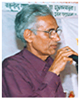

 It gives me immense pleasure to invite you to join the SBS College of Education, a leading institute in Bed education not only in Madhya Pradesh but also in India. The students of this college possess a rare combination of intellect, hardware, discipline and good manners. They possess a very beautiful articulated and cultured outlook.
SBS Foundation has its roots as far back as 19 and has successfully created a reputation for itself. This college has been recognized as one of the best known institutions in higher education. The students from all corners of the country clamor to get admitted to this college. It is here that all the students enjoy total freedom to develop their creative talents.
We sincerely believe in philosophy that without the up-liftment of the society our nation's dream of being a leading nation in the world will remain unfulfilled. To realize our conviction we laid the foundation stone for SBS Foundation, with an objective to address various educational concerns of India and its people.
The foremost aim and mandate of SBS Foundation is to provide equal opportunities for education to all, ensuring that the students' willingness to learn and achieve is given priority over their incapacity to pay and prior academic record. Its principle goal is to facilitate accessibility of education to the students to pursue their career goals.
We are guided by the belief that potent bodies make robust workforce. We aimed to create a developed nation by providing it with healthy bodies and healthy minds.
This aim cannot be achieved without the support and guidance of all whose help the SBS Foundation Team has been seeking and would be seeking.
Our endeavor is that the students who are determined to excel, a competent and dedicated faculty, a meticulously designed curriculum and an optimum infrastructure are going to make SBS Foundation the best in the world.
At SBS Foundation Institutes academic and extra-curricular activities are so blended to let them develop their personalities in holistic manner. Our institutes are committed to provide high quality education to all its students. The strategy adapted to is to provide "Comprehensive Quality Assurance". All attempts are made to ensure that our courses satisfy the need of the students, so that they are acceptable to the industry
I congratulate all those who are going to share the feeling of satisfaction with the success of SBS Foundation.
Dr B.B.Singh
Founder Director, SBS Foundation
All rights reserved [SBS Private Industrial Training Institute]. Best viewed with IE 7+ in 1024 X 768 pixels resolution.